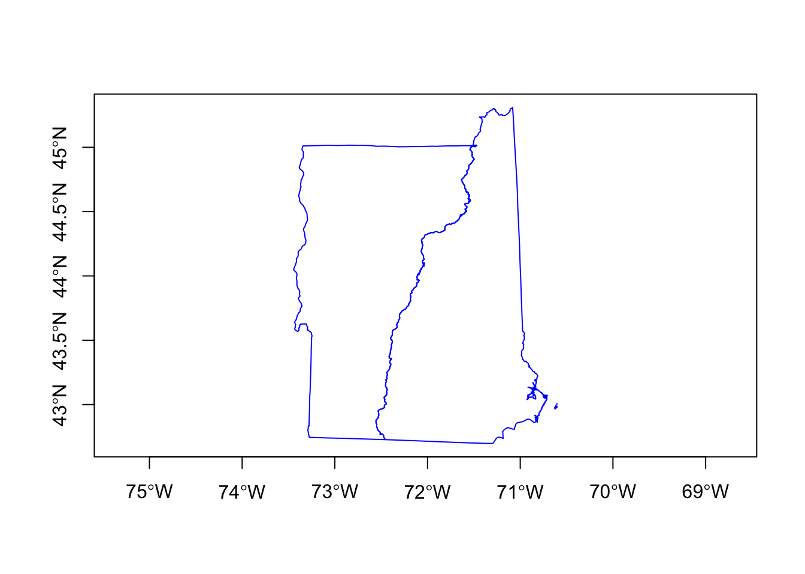
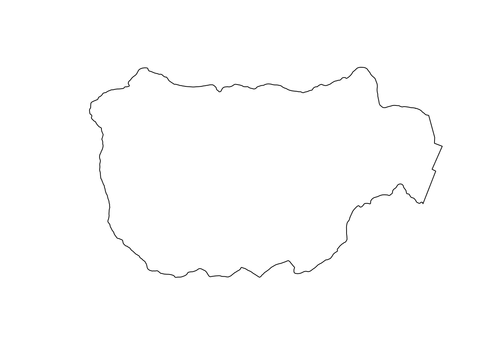

Chapter 2 Shape files
The first step is to define the spatial extent of the area you will be working with and set up any shape files you need to plot boundaries or polygons or mask out areas.
2.1 Create the boundary box
First I need to define an raster::extent object for a box bounding NH and VT. This will be used to crop the data that we download. I can get a bounding box dynamically using drawExtent(). Click twice (upper corner/lower corner) on the map to select the region of interest. Don’t go too far outside the lines.
maps::map("state", region = c("new hampshire", "vermont", "new york",
"massachusetts"))
NHVT <- raster::drawExtent()or I can use longitude/latitude values for the box and use extent():
2.2 Get the states shapefile
I download the shapefile for the NH and VT state borders using getData() which gives polygons for countries. Level 1 will be the state boundaries (I assume). The shape file has all the states. Then I use subset() to get the two states that I want. path says where to save the downloaded file.
usashp <- raster::getData("GADM", country = "USA", level = 1,
path = "data")
nhvtshp <- subset(usashp, NAME_1 %in% c("New Hampshire", "Vermont"))
nhshp <- subset(usashp, NAME_1 %in% c("New Hampshire"))
vtshp <- subset(usashp, NAME_1 %in% c("Vermont"))Check the projection for this shapefile:
CRS arguments:
+proj=longlat +datum=WGS84 +ellps=WGS84 +towgs84=0,0,0 I can plot the shapes.

2.3 Get the Hubbard Brook boundary
I downloaded this shapefile separately and read it in. This will get the boundary of the Hubbard Brook Experimental Forest from a shapefile. Although I write “shapefile” singular, it is actually two files, the shapefile and some metafiles. If you look in the hbef_boundary folder you’ll the metafiles.
I check its projection and note that it is different from the NH+VT shapefile.
CRS arguments:
+proj=utm +zone=19 +ellps=GRS80 +towgs84=0,0,0,0,0,0,0 +units=m
+no_defs I transform the shapefile to get it on the same projection.
Plot it.
